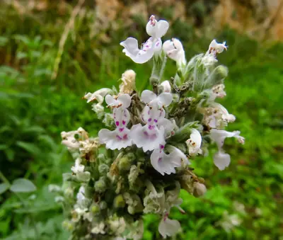

pranet · 出典付きの植物図鑑
イヌハッカ
Nepeta cataria L. · Lamiaceae

イヌハッカ は、シソ科イヌハッカ属の多年草の1種である。日本では古くから長野県筑摩地方で知られ、チクマハッカともよばれる。本種はイヌハッカ属 のタイプ種であり、カール・フォン・リンネの『植物の種』で記載された種、つまり最初に学名がつけられた種の一つである。高さ40–150センチメートルになり、葉は対生し、粗い鋸歯がある。花期は夏、白色から淡紫色で紫色の斑点がある唇形花からなる断続的な花穂を茎頂につける（図1）。ヨーロッパから東アジア原産とされ、日本では筑摩地方のものは自生とも古くの帰化ともされ、その他の地域にも散発的に帰化している。ハーブとして利用され、風味付けや民間薬に利用される。ネコを誘引する効果がある精油（ネペタラクトン）を有し、学名の種小名 cataria は、ラテン語で「ネコの」を意味する。また英名のcatnipは「ネコが噛むもの」を意味し、日本でもキャットニップとよばれることがある。
出典: Wikipedia 日本語版「イヌハッカ」 · CC BY-SA 4.0
異名: Calamintha albiflora Vaniot, Cataria tomentosa Gilib., Cataria vulgaris Gaterau, Glechoma cataria (L.) Kuntze, Glechoma macrura (Ledeb. ex Spreng.) Kuntze, Nepeta americana Vitman, Nepeta bodinieri Vaniot, Nepeta ceretana Sennen, Nepeta citriodora (Dumoulin ex Lej.) Dumort., Nepeta laurentii Sennen, Nepeta macrura Ledeb. ex Spreng., Nepeta minor Mill., Nepeta mollis Salisb., Nepeta ruderalis Boiss., Nepeta tomentosa Vitman, Nepeta vulgaris Lam.
同定や利用は自己責任でお願いします。この図鑑だけを根拠に野生の植物を食べないでください。
出典
- 学名: World Flora Online Plant List 2026-06 · CC0 1.0
- 名前: Wikipedia の記事名と Wikidata · CC0 1.0（Wikidata）。記事名は事実
- 説明: Wikipedia 日本語版「イヌハッカ」 · CC BY-SA 4.0
- 食用・毒性: World Checklist of Useful Plant Species (Diazgranados et al. 2020, RBG Kew) · CC BY 4.0
- 分布: World Checklist of Vascular Plants (WCVP), RBG Kew, version 2026-06-04 · CC BY 3.0
このページは pranet のデータから自動生成しています。コードは MIT、データは項目ごとのライセンス（説明）。